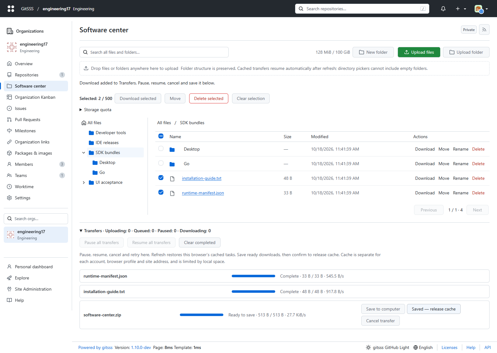
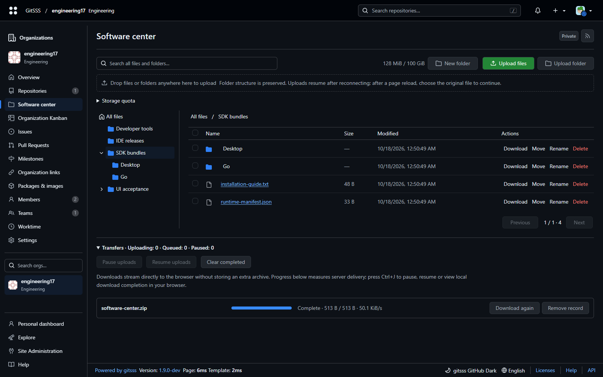
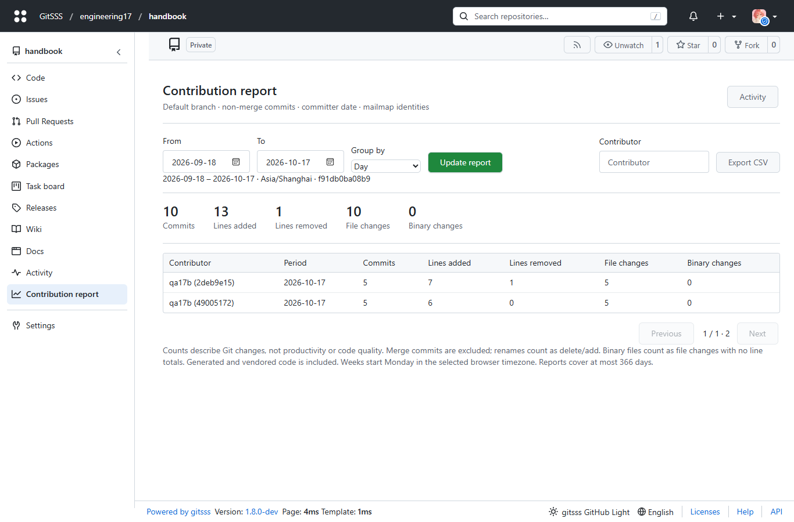

工作区、软件中心与研发统计
组织优先的桌面工作区：顶部统一搜索，左侧固定功能导航，组织英文标识与备注同时显示。只有一个组织时登录直接打开组织概览；/?view=organizations 保留组织目录入口。按 / 聚焦仓库搜索，编辑器输入不受影响。
软件中心
组织成员访问 /{organization}/-/software。支持拖拽上传文件和文件夹、文件夹选择、多级目录、重命名、目录和文件移动、批量选择下载与删除、全局名称搜索、分页、双并发断点上传、进度和速度显示。默认配额为每组织 100 GiB，包含正在上传的预留空间。组织所有者可以调整为 1 GiB 至 10 TiB，但不能低于已用与预留量。最多 20,000 个条目与 32 层目录。上传前检查实时磁盘空间，并保留至少 2 GiB 或卷容量 5%（取较大值），同时保守计入其他正在上传的预留量，避免挤占运行服务的空间。普通组织成员可上传、下载和管理文件；受限账号需要组织所有者身份。请保留正常备份，目录删除会删除其全部子项。
上传使用有界内存流式接收；相同内容在组织内仅保留一份 SHA-256 blob。逻辑大小仍逐文件计入配额。目录和文件名变更只更新元数据。只读元数据缓存最多保留 8 个组织、15 秒，每次成功写入即失效；权限每次请求重新检查。删除失败的 blob 进入持久化清理队列，于后续写操作重试。下载支持 HTTP Range、ETag 和 Last-Modified，私有文件每次请求都检查成员权限。上传失败、取消会释放预留配额与临时文件；分块上传预留在 7 天无活动后于下次写操作清理；旧单次上传预留保留 24 小时规则。
断点传输与批量管理
每块 8 MiB，校验 SHA-256 并同步落盘后才提交偏移；网络重试先核对服务器偏移。上传和下载在同一传输面板支持暂停、继续、取消和失败重试。选中文件先保存到浏览器 IndexedDB；刷新或重开浏览器后自动恢复活动任务，校验完整已上传前缀后续传。手动暂停的任务保持暂停。每用户在一个组织最多 32 个未完成上传，组织总计 128 个。取消上传会释放配额与部分文件。浏览器使用独立 Worker 校验，普通内网 HTTP 同样可用。
目录移动会拒绝循环、同名冲突、超过 32 层以及包含未完成上传的目录；批量删除在验证全部选择后一次提交，不会先删除一半。一次选择最多 500 个根条目。文件夹导入以每 500 条目录路径为一个原子批次，每个文件独立完成；中断后已完成的内容保留。目录选择器不暴露空目录，浏览器拖拽提供空目录时会保留。
多文件和目录下载使用虚拟 ZIP64 Store，直接读取已有 blob，不生成第二份压缩包、不把完整文件放入内存。下载票据属于当前用户，24 小时过期；选择内容被重命名、移动或删除后需重新选择。支持 Range/If-Range/ETag 续传。下载按 8 MiB 范围请求，中间分块只更新内存进度，完成时才保存服务器回执，避免大文件频繁重写组织元数据；验证 ETag、Content-Range 和长度后，将数据与偏移一起提交到本地缓存。传输面板显示进度与速度，暂停会中止请求，继续从已提交偏移恢复；失败自动退避重试，最终失败可手动重试。下载完成后在面板点击“保存到电脑”，确认“已保存，释放缓存”后才回收本地数据；普通 HTTP 无法可靠获知最终写盘是否成功。未确认前可重复保存，无需重新下载。取消会清除本地分块与下载票据，不删除源文件。反向代理须转发 PATCH、Range 和至少 8 MiB 请求体，不能缓存私有文件路由。
浏览器缓存与恢复边界
缓存按账号、组织与网站来源隔离，不同端口和浏览器配置不会共享。跨标签页通过事务租约避免重复传输；关闭或崩溃后最多等待 15 秒接管。完成上传、确认保存下载、取消任务会释放缓存；七天未使用的缓存于下次访问软件中心清理。清空已完成记录不会丢弃尚未保存的下载。浏览器存储配额与服务端配额分别计算；隐私模式、空间不足或清理网站数据可能无法自动恢复。缓存失败时上传会明确提示只能在当前页面续传；下载需启用网站存储。大文件受本地浏览器配额与 Blob 保存能力限制，不承诺任意大小都能自动恢复。服务器路径、数据库结构与 Git/SSH/LFS 均未改变；回滚 1.9 前先完成或取消页面下载。
API 与存储兼容性
页面与 API 使用相同登录和组织成员权限。GET /list?parent=&q=&page=1 每页最多 200 项；POST /mkdir、/rename、/delete 使用表单字段 parent/name/id；POST /upload?parent=&name=&size= 发送 application/octet-stream；GET /download/{id} 支持 Range。写入遵循站点跨来源保护。
文件仅新增在 APP_DATA_PATH/gitsss/extensions/software-center/{organizationID}/；元数据在现有 app_state 的 software-center-v1-* 键中。无数据库结构迁移，不移动或重写 Git、LFS、软件包、Actions 产物和日志。扩展采用每个数据目录单一 GitSSS 写进程。备份数据库和扩展目录；回滚到 1.8 可直接读取已完成文件；回滚前须完成或取消未完成的分块会话，旧版本写入元数据时无法保留新增会话字段。下载票据需重新创建。更早版本保留数据但不展示入口。详见 传输 API 与兼容性报告。
多人、多页签并发上传
同一账号的不同页签拥有独立传输队列，组织内不同成员也可同时上传。每页签最多两个上传工作任务，服务端跨账号和页签最多八个分块流；原有每人 32、每组织 128 个待完成会话限制继续生效。同一上传会话由单个页签持有，避免重复传输。页签退出释放队列；崩溃后租约在 15 秒内到期，其他打开的软件中心在下一次三秒扫描时接管缓存文件和已提交偏移。手动暂停继续保留，已完成项自动消失；不同账号之间不会互相恢复或管理任务。旧缓存仍兼容，新功能部署后须刷新旧页签。回滚前完成或取消传输，旧前端无法发现新页签队列，但不会删除缓存。
平台分类与 Agent HTTP 整理
文件列表和目录树优先目录，再按名称 A–Z 排序。新增“系统”标签：exe/msi/msix/appx 为 Windows，dmg/pkg/app 为 macOS，ipa 为 iOS，apk/aab/apks/xapk 为 Android；zip/7z/rar/tar/gz/tgz/bz2/tbz2/xz/txz/zst 统一显示“全平台”，不由压缩包名称推测系统。其他后缀显示“待识别”，目录显示横线；重命名后自动重新识别。工具栏可按系统筛选，筛选与全局搜索、目录和分页组合使用，目录仍保留供导航；选择状态同步到 URL，支持浏览器前进/后退。
Agent 使用 GET /api/v1/orgs/{org}/software?recursive=true&page=1 读取每页最多 200 个条目、总数、完整路径和平台。POST /api/v1/orgs/{org}/software/organize 接收 JSON，默认 {"parent":"","apply":false} 只返回预览；带回 revision 并设置 apply:true 后一次保存。内容或上传状态改变返回 409，须重新预览。结果含目录创建、移动与待识别文件，重复运行不重复建目录或移动。
整理为 Android、iOS、macOS、Windows、全平台，下层保留原用途目录；能复用的用途目录保留原 ID，空目录放入全平台。仅创建实际接收内容的平台目录，因此空目录无需整理。包含待识别文件或未完成上传的用途目录保留原处，已完成且可识别的文件仍可分别整理。支持每次最多 500 个文件的 platforms 显式目的平台，标签继续以后缀为准。冲突、配额或层级超限整批不写入，不覆盖或删除文件。详见 HTTP 示例、完整规则与回滚。
网页提供“按平台整理”入口，可对当前目录及子目录生成只读预览，逐页查看每 50 条路径变更、待创建目录数和待识别文件。用户明确应用时携带预览 revision；文件、目录或上传状态发生变化会重新生成预览，不会应用过期方案。页面通过 POST /{org}/-/software/organize 使用现有登录会话与同源保护；不会复制、覆盖或删除文件内容。
沿用 Bearer Token：GET 要求 read:organization，POST（含预览）要求 write:organization；调用人必须为组织成员，受限账号还须组织所有者，拒绝 public-only Token。令牌仅由调用方私密保存。新增 API 和展示字段，不改变数据库结构、app_state v1、文件 ID、摘要、字节和 Git/LFS/存储路径；回滚旧二进制保留整理结果，但不再显示标签或提供整理 API。
文件列表与活动传输
传输面板仅保留等待、进行、暂停、失败和待保存任务。上传完成后自动消失，无任务时隐藏面板；刷新时清理旧版已完成记录。下载接收完成后仍保留“待保存”，保存到电脑并确认后自动移除和释放缓存，避免误删尚未保存的下载。暂停、重试、取消和刷新续传保持原协议。
目录、安装程序、压缩包、图片、源码等使用本地图标；下载、移动、重命名、删除有清晰边框、图标和文字。可拖动单项或多选项到左侧目录树、面包屑或目录行；目标高亮，自身和子目录不可作为目标，也保留键盘可用的移动对话框。修改时间统一为浏览器本地 yyyy-MM-dd HH:mm:ss。大小按 <10 MiB、10–100 MiB、100 MiB–1 GiB、1–10 GiB、≥10 GiB 从绿到红分档，数字和图例同时保留，颜色仅表示大小。
组织超链接
组织导航入口位于“仓库列表”下方，图标使用颜色区分。服务卡片显示名称、目标地址、公共或个人来源及新标签页跳转动作。目标图标由访问者浏览器延迟读取目标源的 /favicon.ico，不附带跳转链接中的查询参数、凭据或 Referer；GitSSS 服务端不抓取或代理目标。图标不可用、HTTPS 页面指向 HTTP 服务或 JavaScript 未启用时保留本地图标。保存后原地更新卡片，不丢失另一个编辑器的草稿。
公共链接和每位用户的个人链接各支持 10,000 条，公共链接仍由站点管理员维护，个人链接仅属于当前用户。名称和地址支持不区分大小写的搜索，每页合计最多显示 24 条；编辑只影响当前页当前范围，其他页保留不变。多人同时修改时，过期的编辑器需要刷新。关闭 JavaScript 后仍可提交并返回列表，每次可新增一条或勾选删除。
升级继续使用原有 app-state 键和 JSON 格式，无需迁移数据库。进程内使用有上限的缓存，并通过数据库版本检查其他进程的修改。回滚会保留数据，但旧版本仍限制每次保存 32 条且可能一次渲染全部链接；需要在旧版本继续编辑时，应先缩减列表，或保留数据待重新升级。
Maven / Go Modules / PyPI / npm 内网仓库
组织超链接页提供 Maven、Go、PyPI、npm、Cargo、NuGet 和 Composer 内网仓库的地址、复制按钮、客户端接入配置和中央镜像的启用状态。同一地址可发布私有包、下载依赖；私有包优先，启用镜像后未命中的公共包从中央仓库下载并缓存到内网。
| 客户端 | 仓库地址（示例组织 acme） | 发布方式 |
|---|---|---|
| Maven / Gradle | https://git.example.com/api/packages/acme/maven | Maven deploy；上传地址不变 |
| Go Modules | https://git.example.com/api/packages/acme/go | PUT .../go/upload 上传模块 ZIP |
| PyPI / pip | https://git.example.com/api/packages/acme/pypi/simple/ | Twine 上传到 .../pypi |
| npm / pnpm | https://git.example.com/api/packages/acme/npm/ | npm publish --registry=... |
站点管理员在 app.ini 启用并重启服务。默认关闭，保留已有安装的网络行为。可替换为兼容的中央镜像地址；URL 不允许携带凭据、查询参数或片段。
[packages.mirror]
ENABLED = true
MAVEN_URL = https://repo.maven.apache.org/maven2
GO_URL = https://proxy.golang.org
; 主站为 HTTP 时，填写 Go 客户端使用的受信任 HTTPS 入口
GO_CLIENT_BASE_URL = https://git.example.com:3443
GO_FILE_HOSTS = storage.googleapis.com
PYPI_URL = https://pypi.org/simple
NPM_URL = https://registry.npmjs.org
CARGO_INDEX_URL = https://index.crates.io
CARGO_FILES_URL = https://static.crates.io/crates
NUGET_URL = https://api.nuget.org/v3-flatcontainer
COMPOSER_URL = https://repo.packagist.org
COMPOSER_FILE_HOSTS = api.github.com,codeload.github.com,github.com,gitlab.com,bitbucket.org
PYPI_FILE_HOSTS = files.pythonhosted.org
NPM_FILE_HOSTS =
PRIVATE_PATTERNS = github.com/your-company/**,com.yourcompany:*,@your-company/*
METADATA_TTL = 5m
ARTIFACT_TTL = 168h
TIMEOUT = 2m
MAX_SIZE = 10737418240
MAX_FILE_SIZE = 536870912
MAX_ENTRIES = 50000PRIVATE_PATTERNS 使用 GitSSS glob（** 可跨路径段），为尚未发布的私有名称保留空间；启用前填好公司的 Go 路径、Maven 坐标和 Python 包名。组织同名 npm scope 和本站域名下的 Go 路径自动保留。已发布的私有包名称不会回源寻找其他版本或缺失文件。上游主机自动允许；额外下载/CDN 主机必须逐个填写 *_FILE_HOSTS，可带端口，不接受通配符。跳转也受同一白名单限制；站点凭据和 Cookie 不会发给上游，出站代理沿用站点设置。
Maven 在 settings.xml 的 <settings> 中添加以下配置；私有依赖的 repository 和 distributionManagement 使用同一仓库地址。
<mirrors>
<mirror>
<id>gitsss</id>
<mirrorOf>central</mirrorOf>
<url>https://git.example.com/api/packages/acme/maven</url>
</mirror>
</mirrors>
go env -w GOPROXY=https://git.example.com/api/packages/acme/go
python -m pip config set global.index-url https://git.example.com/api/packages/acme/pypi/simple/
npm config set registry https://git.example.com/api/packages/acme/npm/私有组织需要账号和软件包读取令牌，发布需要写入权限。Maven 的 <server> ID 对应 mirror/repository ID；npm 把路径限定的 _authToken 存在用户 .npmrc；pip 使用 keyring 或受保护的 .netrc；Composer 使用受保护的 auth.json 或 COMPOSER_AUTH；NuGet 可使用凭据提供器。Go 的 .netrc 与 GOAUTH 仅向 HTTPS 发送凭据，认证 HTTP GOPROXY 无法使用，GOINSECURE 也不会改变该行为。主站为 HTTP 时应配置受信任的 HTTPS 反向代理，并将其基础地址（含应用子路径）填入 GO_CLIENT_BASE_URL；各客户端需信任其证书。凭据不要写进仓库 URL、项目源码或日志。HTTP pip 仓库需显式设置 trusted-host，页面会提供相应配置。
Go 1.27 使用非默认端口时，.netrc 的 machine 需要匹配完整主机和端口，例如 machine git.example.com:3443。GO_CLIENT_BASE_URL 只改变页面展示的 Go 客户端地址；反向代理必须转发软件包路径及认证头，不得缓存私有响应。
Go 私有模块配置 GOPRIVATE/GONOSUMDB；若私有模块也走这个代理，设置 GONOPROXY=none。公共模块继续验证 checksum；内网代理转发 sumdb/sum.golang.org 的签名校验协议。pip 使用单一内网 index，不为私有依赖附加公共 extra-index-url。npm/PyPI 下载链接会改写成绑定组织且带签名的内网地址，下载时仍检查组织权限，保留 integrity、文件 hash、Python 版本约束和撤回标记；PyPI 的 PEP 658 元数据也走缓存。Cargo 使用 sparse 索引并保留 crate 校验值，私有组织使用 cargo login --registry gitsss 配置凭据。NuGet 镜像覆盖 v3 flat-container 的版本列表和包文件；搜索及注册元数据仍来自本地仓库。
Composer v2 元数据中的发布压缩包改写为绑定组织的签名地址，并缓存到内网；下载及重定向的域名必须在 COMPOSER_FILE_HOSTS 白名单中，未授权域名会被拒绝。Composer 回退到 source 方式时仍可能直接访问原始 Git 主机；需要全部依赖流量留在内网时应配置网络限制。
响应头 X-GitSSS-Mirror 的 MISS 表示首次回源，HIT 表示缓存命中，STALE 表示上游故障或限流时使用已过期缓存。没有缓存时透传 429 和 Retry-After；中央仓库限制出口 IP 时，可配置兼容镜像或站点出站代理。Go 默认允许官方代理跳转到 storage.googleapis.com 下载 ZIP。404/410 不缓存、不恢复旧条目；有效期到期后重新回源。它是按需缓存，不是全量同步。npm 搜索、审计和发布仍使用原有本地仓库行为。
兼容、容量与回滚
没有数据库迁移，既有包地址、权限和存储不变。缓存只新增 layout v1 的 package-mirror reservation 和 APP_DATA_PATH/gitsss/extensions/package-mirror/；不会改写 Git、refs、LFS 或已发布软件包。未知 layout 版本会在创建缓存前拒绝写入。默认成品缓存上限 10 GiB、50,000 项（每项含 4 KiB 头部），单文件 512 MiB，元数据另有 32 MiB 上限，按写入时间淘汰旧项；进程首次建立缓存索引，之后增量维护。每个缓存目录只使用一个 GitSSS 写入进程，多个独立进程不协调配额。最多四个同时下载，相同 URL 合并回源。另为临时文件预留最多四倍单文件上限的空间。命中后从磁盘流式读取，支持 HEAD/Range。缓存公共字节可共享，每次访问仍检查权限。
关闭 ENABLED 或回滚旧二进制即可停用，已有私有包照常访问；停服后可删除缓存目录，不需迁移 Git/LFS/数据库。单元测试、SQLite 两种构建、真实客户端与中央网络验证分别记录。详见 行为及兼容报告。协议参考：Maven mirrors、Go proxy、PyPI Simple API、npm registry。
2026-11-04 分层验收记录：真实客户端两轮下载的产物 SHA-256 一致，缓存命中成立，CGO / pure-Go SQLite 与 race 检查分层记录。Maven 官方源对当前出口限流，使用可配置中央镜像完成下载并与官方产物比对。桌面浅色、深色和窄窗页面已查看；200% 浏览器缩放复核未完成。记录中的本地测试不代表线上验收。
Docker / OCI 镜像中心
GitSSS 已包含 OCI Distribution /v2/ 服务，不需要部署另一个 Registry。镜像位于组织软件包中，使用已有软件包访问权限和内容去重存储。
docker login git.example.com
docker tag app:latest git.example.com/engineering/app:latest
docker push git.example.com/engineering/app:latest
docker pull git.example.com/engineering/app:latest自动化使用独立的软件包访问令牌。建议 HTTPS。HTTP-only 内网部署需要由客户端管理员在 Docker daemon 的 insecure-registries 中精确添加该 HOST:PORT，再按客户端说明应用设置；GitSSS 不修改其他人的 Docker 或 SSH 设置。
贡献统计
仓库活动中的贡献统计支持每日、每周（周一开始）、每月汇总、贡献者搜索和 CSV。以默认分支的非合并提交为准，使用提交者时间和浏览器时区，遵循 .mailmap。提交数、新增/删除行、文件变更次数、二进制变更分别计数。重命名按删除/新增计算，包含生成代码和第三方代码。统计是变更量，不是生产力或质量评分。
一个 Git 流最多处理 50,000 个提交，日期范围最多 366 天。超过限制会显式提示缩短范围。按 SHA、范围、时区缓存十分钟，分组切换不重新扫描 Git。每次只渲染 200 行；导出包含全部筛选结果，并转义电子表格公式。同名但不同邮箱身份显示短身份标识，使用 mailmap 可合并。
Git 与通知
Git HTTP refs 使用流式输出，只暂存协议识别所需的 14 字节，v2 直接以版本包开始，v0/v1 保留服务前缀。不缓存权限结果，不改变 refs、对象或 SSH 配置。首次推送卡片跳到具体提交，正常多提交推送跳到对比页面；已删除仓库的旧消息链接无法继续访问。
桌面演示与验证
1.9 分层验收记录：新增分块失败回滚、真实服务重启恢复、101 文件原生文件夹拖拽与空目录、ZIP64 多客户端解包和权限检查。自动可访问性扫描通过不等于完整人工认证；本机速度不代表局域网速度。
软件中心截图更新于 2026-10-18，贡献统计截图保留 2026-10-17 的隔离演示实例。Edge 已检查 29 类页面、明暗配色共 58 次，以及目录创建/重命名/搜索/批量移动删除确认、上传暂停与刷新续传、目录树与传输历史上限、键盘与焦点；1366 与 1600 像素桌面视口均无横向溢出。真实本机客户端已验证 64 MiB 流式传输、SHA-256、Range、权限与 CSRF，以及 Git v0/v1/v2、浅克隆/深化/部分克隆、LFS 和 Docker 29 的构建/推送/拉取。回环速度不代表局域网速度；每次部署仍须核对既有 SSH、Git/LFS 和服务状态。



GitHub 组织工作台参考 · Git protocol v2
1.10 transfer-panel acceptance · 2026-10-18
贡献热力图
默认配色采用 GitHub 的四级绿色，并自动适配浅色与深色主题；旧默认设置自动更新，用户自定义配色与区间保留。默认按近 365 天活跃日期的活动量分布自动划分四档；图例显示具体范围，也可手动设置。各项统计数字右侧显示相比截至昨天相同本地日期窗口的变化；滚动窗口内的旧活动移出后，变化可能为负数。活跃天数和单日最高也按相同的 365 天窗口比较。